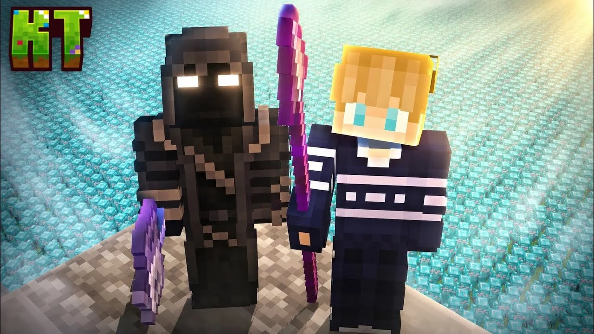
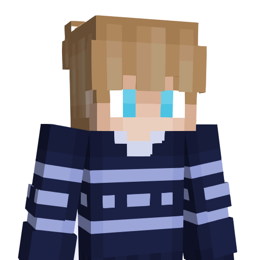
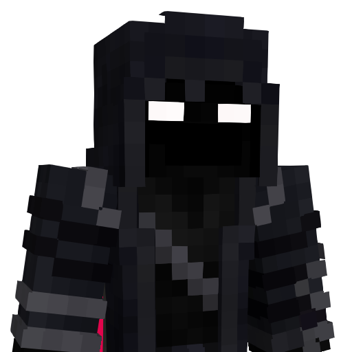
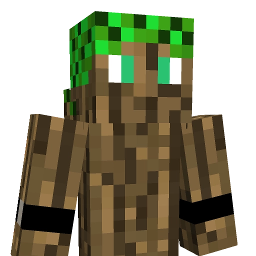

Historia, która zmienia się z każdym kolejnym rozdziałem.
Kraina Twórców to coś więcej niż zwykły serwer Minecraft. To rozbudowane, fabularne uniwersum, gdzie autorska mechanika kryształów i skomplikowane relacje między graczami tworzą wielogodzinne, kinowe przeżycie.
Wejdź do świata Krainy Twórców
Krótka zapowiedź pokazuje klimat projektu, jego bohaterów oraz początki historii. To najlepszy punkt startowy przed przejściem do pełnej opowieści na YouTube.

▶Kraina Twórców | Oficjalny Zwiastun
Oglądaj historię z różnych perspektyw
Każdy twórca przedstawia wydarzenia ze swojej perspektywy, rozwijając wspólne uniwersum Krainy Twórców.

Nieskot
Postać uwikłana w wydarzenia odkrywające coraz mroczniejsze tajemnice świata.

Rekskyy
Tajemnicza postać balansująca pomiędzy chaosem, kontrolą i własnymi ukrytymi motywami.

Dombeek
Postać która występuje przeciwko problemowi władzy. Wierzy że jest w stanie utrzymać pokój.
IceHost
Hosting serwera Kraina Twórców zapewnia IceHost. Dzięki ich wsparciu serwer działa stabilnie, szybko i bezpiecznie.
Przejdź do IceHost ↗Regulamin Projektu
Ostatnia aktualizacja: 7.06.2026
§1.1. Społeczność i Bezpieczeństwo
- Atmosfera i Szacunek: Zakazuje się obrażania, poniżania, dyskryminacji oraz innych form agresji wobec uczestników.
- Treści Niestosowne: Zabrania się publikowania drastycznych materiałów, podejrzanych linków oraz innych nieodpowiednich treści.
- Tematy Wrażliwe: Zakazuje się poruszania tematów politycznych, religijnych i światopoglądowych niezwiązanych z projektem.
- Poufność i Bezpieczeństwo: Zabrania się udostępniania danych wrażliwych oraz oszukiwania innych uczestników.
- Tożsamość: Zakazuje się podszywania pod innych użytkowników, członków ekipy oraz postacie fabularne.
§1.2. Komunikacja i Porządek
- Komunikacja z Administracją: Pingi Administracji i Moderacji są dozwolone wyłącznie w nagłych sytuacjach. W pozostałych sprawach należy korzystać z ticketów: #🎫┃rekrutacja.
- Kultura Języka: Nadużywanie wulgaryzmów będzie traktowane jako brak kultury i może skutkować upomnieniem.
- Spam i Estetyka Chatu: Zakazuje się spamu, floodu oraz nadużywania Caps Locka.
- Kanały Głosowe: Na publicznych kanałach głosowych zabrania się używania modulatorów, bindów oraz emitowania irytujących dźwięków.
- Kanał Propozycji: Na kanale #💼┃propozycje zakazuje się publikowania treści niemerytorycznych, wulgarnych lub wrogich wobec innych uczestników.
- Nadużywanie Ticketów: Zabrania się tworzenia ticketów bez wyraźnego powodu lub w niewłaściwej kategorii. Nadużywanie systemu może skutkować upomnieniem, ograniczeniem dostępu do ticketów lub banem.
§1.3. Postanowienia Końcowe
Użytkownik jest zobowiązany do przestrzegania Regulaminu Discorda. Nieznajomość powyższych zasad nie zwalnia z odpowiedzialności za ich łamanie. Administracja zastrzega sobie prawo do zmian w Regulaminie. Informacje o zmianach będą publikowane na kanale #🚨┃ogłoszenia.
§2.1. Postanowienia Ogólne
- Kraina Twórców to fabularny projekt realizowany na serwerze Minecraft podczas sesji nagraniowych.
- Materiały z sesji publikowane są wyłącznie na kanałach:
Kraina Twórców, Nieskot, Rekskyy, Dombeek - Serwer jest publiczny, jednak udział w fabule i dostęp do stref nagrań zależy od posiadanej roli oraz decyzji Włodarzy.
§2.2. Struktura i Role
- Włodarze: Producenci i główni scenarzyści projektu (Nieskot i Rekskyy). Podejmują ostateczne decyzje dotyczące projektu, fabuły i organizacji serwera.
- Twórca: Osoba współtworząca uniwersum projektu poprzez tworzenie własnych scenariuszy, nagrywanie filmów na swój kanał oraz rozwijanie fabuły związanej z projektem.
- Admin: Odpowiada za kwestie techniczne, porządek i egzekwowanie regulaminu.
- Moderator: Dba o porządek na serwerze i czacie.
- Członek: Osoba należąca do głównej obsady projektu i odgrywająca przypisaną postać.
- Widz: Statysta stanowiący tło wydarzeń fabularnych.
- Blacklist: Rola przyznawana osobom wykluczonym z projektu z powodu rażącego naruszenia regulaminu, działania na szkodę projektu lub poważnego łamania zasad współpracy.
§2.3. Tożsamość Utajniona (System Nicked)
- Funkcja Nicked jest nadawana wyłącznie przez Włodarzy lub Adminów na potrzeby fabuły.
- Osoba posiadająca status Nicked ma obowiązek zachowania anonimowości.
- Włodarze lub Admini mogą wymagać od osoby z ukrytym nickiem używania modulatora głosu lub wyciszenia mikrofonu.
- Zasady korzystania z mikrofonu przez pozostałych uczestników ustalają Włodarze przed sesją.
§2.4. Sesje Nagraniowe i Dyscyplina
- Obecność Członków: Osoby z rolą Członek są zobowiązane do zgłaszania nieobecności z wyprzedzeniem. Notoryczne absencje mogą skutkować utratą roli fabularnej.
- Osoby bez roli: Mogą uczestniczyć w sesjach dobrowolnie, jednak podczas nagrań muszą stosować się do poleceń Administracji pod rygorem usunięcia z serwera.
- Trollowanie i przeszkadzanie: Zabrania się celowego utrudniania nagrań, zakłócania scen oraz przeszkadzania uczestnikom. Naruszenie tej zasady może skutkować upomnieniem lub banem.
§2.5. Zasady Fabularne i Kreatywność
- Inicjatywa: Włodarze są otwarci na pomysły fabularne od Adminów i Członków. Każda propozycja musi zostać przedstawiona i zaakceptowana przez Produkcję przed sesją.
- Immersja: Podczas nagrań obowiązuje zakaz wychodzenia z roli (brak rozmów OOC). Przeszkadzanie uczestnikom, zakłócanie scen lub griefing mogą skutkować surowymi karami.
§2.6. Media i Poufność
- Zakaz Spoilerów: Zabrania się udostępniania screenshotów, nagrań zza kulis oraz informacji dotyczących fabuły przed ich oficjalną publikacją.
- Wizerunek: Dołączając do nagrań, uczestnik wyraża zgodę na wykorzystanie swojego głosu oraz wizerunku postaci (skina) w materiałach tworzonych przez Włodarzy.
- Materiały po usunięciu z projektu: Włodarze zastrzegają sobie prawo do pozostawienia lub usunięcia materiałów zawierających osoby, które zostały usunięte z projektu lub zbanowane.
§2.7. Zasady Techniczne i Fair Play
- Modyfikacje dające przewagę: Zabrania się używania cheatów, skryptów oraz tekstur typu X-Ray. Naruszenie tej zasady skutkuje natychmiastowym permanentnym banem.
- Sprzęt: Uczestnicy biorący udział w fabule są zobowiązani do posiadania sprawnego mikrofonu oraz stabilnego połączenia internetowego.
§2.8. Sankcje
Włodarze oraz Admini zastrzegają sobie prawo do usunięcia z projektu każdej osoby, która:
- łamie regulamin,
- ujawnia informacje dotyczące fabuły,
- działa na szkodę projektu lub jego wizerunku.
§3.1. Administrator i zakres danych
Właścicielem strony jest projekt Kraina Twórców. Serwis nie prowadzi rejestracji ani systemu kont użytkowników. Nie stosujemy profilowania, śledzenia marketingowego ani automatycznej analityki użytkowników.
Strona została zaprojektowana w sposób możliwie prosty i lokalny, bez zbędnego przetwarzania danych użytkowników.
§3.2. Kontakt
Wszelkie pytania dotyczące projektu oraz ochrony prywatności można kierować pod adres e-mail: Ładowanie... lub poprzez oficjalny serwer Discord .
§3.3. Twoje prawa
Masz prawo do kontaktu z administratorem oraz do uzyskania informacji dotyczących przetwarzania danych związanych z kontaktem mailowym lub komunikacją poprzez Discord.
Najczęściej Zadawane Pytania
Centrum informacji Krainy Twórców
Jak dostać się na nagrywkę?
Są na to dwa sposoby w zależności od roli, jaką chcesz pełnić:
- Jako statysta (Nicked): W dzień nagrywki, kiedy na serwerze zostaje otworzone podium, musisz po prostu wejść na nie na czas.
- Jako oficjalny Członek z rolą: Musisz przejść proces rekrutacji. W tym celu złóż oficjalne podanie na naszym Discordzie na kanale #🎫┃rekrutacja.
Kiedy odbywają się nagrywki?
Harmonogram wszystkich nadchodzących sesji znajdziesz bezpośrednio na naszym serwerze Discord. Wszystko jest dokładnie rozpisane w sekcji wydarzeń na samej górze listy kanałów:
- Na komputerze: Kliknij w ikonę kalendarza z napisem "Przeglądaj wydarzenia" na samym szczycie listy.
- Na telefonie: Stuknij w charakterystyczną emotkę kalendarza wyświetlaną nad kanałami tekstowymi.
Czy można nagrywać materiały na swój własny kanał?
Nie. Nagrywanie oraz publikowanie własnych materiałów
bezpośrednio z wnętrza projektu jest zabronione. Oficjalne treści fabularne
publikujemy wyłącznie na kanałach: Nieskot,
Rekskyy oraz Kraina Twórców.
Co z funny moments? Jeśli chcesz tworzyć kompilacje lub analizy
na bazie naszych gotowych filmów (tzw. fan-content), jest to jak najbardziej
dozwolone. Pamiętaj jedynie o podaniu źródła w opisie oraz o tym, by w żaden
sposób nie sugerować, że jesteś oficjalnym twórcą projektu.
Czym dokładnie jest Kraina Twórców?
Kraina Twórców to fabularny projekt typu Scripted SMP osadzony w świecie Minecrafta. Rozbudowane historie, autorskie postacie oraz zaplanowane wydarzenia tworzą wielowątkowe uniwersum przypominające serial opowiadany z różnych perspektyw. Projekt łączy roleplay, storytelling i dynamiczne zwroty akcji, budując historię śledzoną przez tysiące widzów.
Jaki jest lore tego świata?
Wiele lat temu powstała pewna kraina, gdzie zaczęli pojawiać się pierwsi gracze. Atmosfera była dość pokojowa - gracze budowali budowle, wygłupiali się i wspólnie spędzali czas. Jednakże po jakimś czasie zaczęło pojawiać się coraz więcej osób, co doprowadziło do pierwszych walk. Wielu pokojowych graczy chowało się w podziemiach na dalekich koordynatach, inni przechodzili na złą stronę.
Wtedy również rządził pierwszy władca serwera, który był koszmarny dla wielu osób. Kazał osobom, które się jemu sprzeciwiały, jak i swoim poddanym, niszczyć kryształy, które dają możliwość ponownego odrodzenia się po śmierci. Po jakimś czasie wybuchła wojna w równoległej krainie, której skutkiem było to, że każdy po zostaniu wyeliminowanym za pomocą nielegalnego miecza, lądował w głównej krainie.
Co to jest "System Nicked" wspomniany w regulaminie?
System Nicked to techniczne narzędzie pozwalające ukryć lub całkowicie zmienić nick gracza nad głową oraz na liście tab. Jest to kluczowy element budowania tajemniczości w scenariuszu. Gracz z taką funkcją ma kategoryczny zakaz wyjawiania kim jest, a w zależności od wytycznych reżyserskich musi używać specjalnego modulatora dźwięku lub grać bez używania mikrofonu.
Gdzie zgłaszać błędy lub propozycje fabularne?
Wszystkie sprawy techniczne, problemy z grą oraz kreatywne pomysły przyjmujemy na naszym serwerze Discord. Od spraw spornych i błędów posiadamy specjalny system ticketów (#📥┃stwórz-ticket), z kolei merytoryczne pomysły na rozwój świata gry możecie wysyłać na kanale #💼┃propozycje.